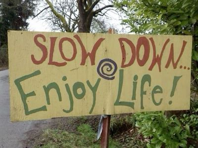

My North Star
˗ˏˋ ★ ˎˊ˗
When I first heard about the term of a 'North Star' it felt like this
amazing revelation.
What a beautiful sentiment!
I grew up where the stars shone brightly at night, and it really feels
like you can see the whole universe.
For me, my North Star (or a whole starry sky!),
would be revolved around art. Everything becomes art when you
give it the attention, it's
beautiful and wholly emotive. I would like to spend this lifetime creating (as closely
as I can)
wonderful emotions I have felt. I want my North Star, to be a reminder of how wonderful
things can be,
and I'd like to work hard to create a tiny drop of good for our world!
I'm excited to live a life full of love and curiosity,
I want to create all I can, and love forever.

Whilst my biggest goal is to spend a life creating, I have smaller things I am looking forward too!
I'm currently in my Second Year at CCI BSc Creative Computing, enjoying all these new things
I'm learning.
At the moment, I want to take the things I am learning and experiment with them,
creating fun projects,
and pushing myself creatively. Most recently, I recreated my mum's lost toy from her
childhood.
It was fun and lots of good mistakes were learnt! The rest of what I'm up to I'll keep a surprise
(for now...),
but I am so excited to see where it goes, and will try to update this website frequently! ˚˖𓍢ִ໋❀